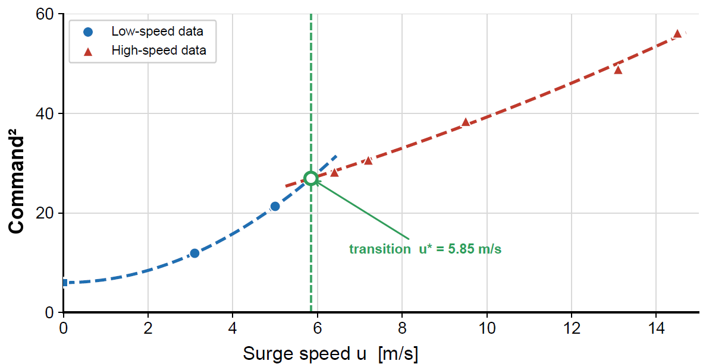

Overview
Most surface-vehicle controllers are identified and tuned around low-speed operation. At high speed the hull transitions to planing, the thrust–speed relationship changes shape, and a single low-speed model no longer predicts the vehicle’s response. This project extends autonomous control of a fast ASV to that regime — combining a speed-scheduled surge feedforward model with line-of-sight (LOS) guidance so the vehicle follows its path accurately even as it accelerates toward top speed.
Platform
A planing-hull autonomous surface vehicle capable of high-speed operation.
Surge Feedforward Model
One low-speed fit cannot describe the thrust–speed curve across the planing transition.

- Feedforward. A speed-scheduled surge model supplies the nominal thrust so the feedback controller only has to reject residuals.
- Guidance. LOS guidance steers the vehicle onto and along the path, holding cross-track error below ~6 m.
- Regime handling. The transition at u* switches between the displacement and planing fits, avoiding the model mismatch a single fit would incur at speed.
Field Footage
The ASV running at high speed during sea trials.